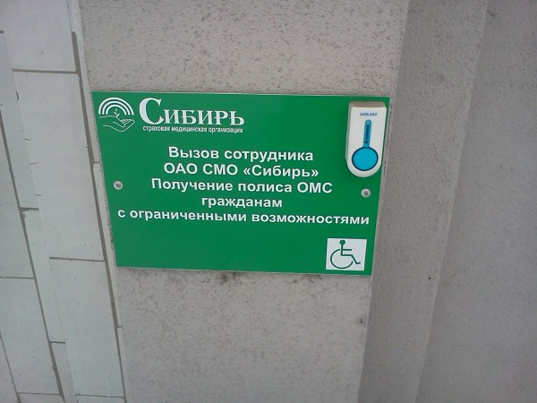
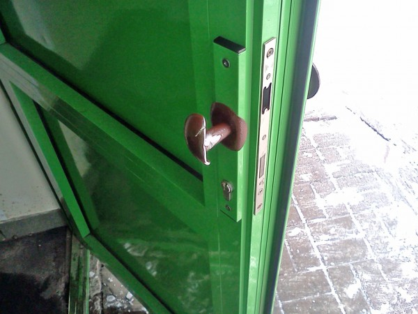

Заехал сегодня сделать дочери страховой полис ОМС. Пора по врачам пройтись, а без полиса не пройтись. Может и есть какие-то другие способы, но много лет с ОМС у меня ассоциируется страховая компания «Сибирь» за «кольцом».
За время с моего последнего посещения в страховой компании появилось несколько нововведений.
Первое: о приходе страхового полиса, который нужно будет получить взамен временного, обещали оповестить по SMS.
Второе: худо-бедно в учреждениях Кемерово начинают заботится обо всех гражданах (интересно, работает?)

Третье: ручку на дверь устанавливал настоящий, способный к творческим решениям инженер.
